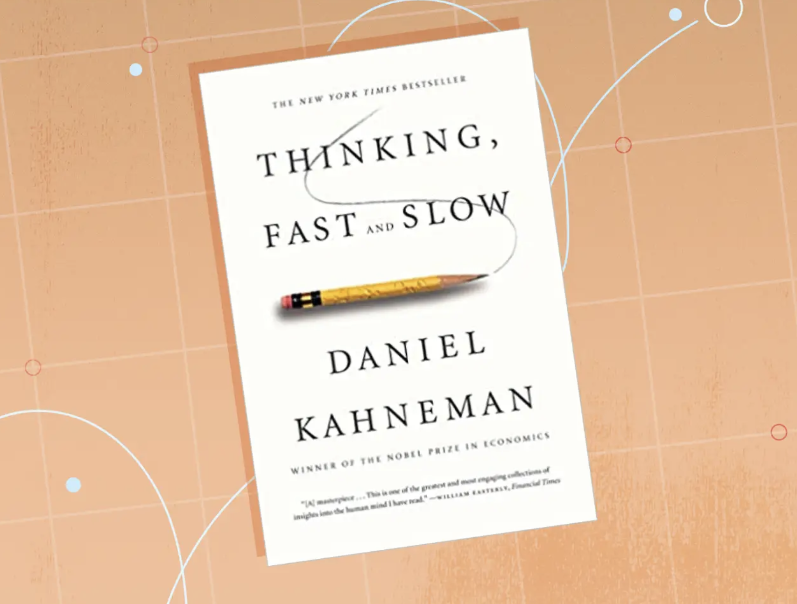
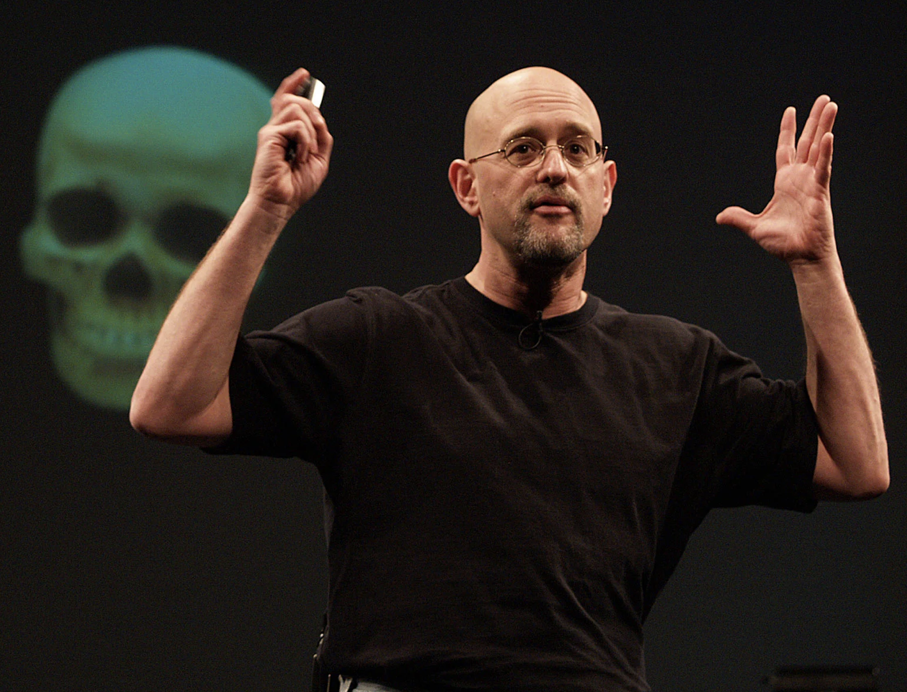

Review
Is Testimony a Basic Knowledge Source
Lots of reasons to think it might not be.
- People deceive us, either intentionally or unintentionally.
- Sources differ.
- Testimony isn’t independent of other sources.
Is Testimony a Basic Knowledge Source
None of these are conclusive, since they all overgenerate.
- Looks can be deceiving.
- Things look different from different angles.
- Inference isn’t independent.
Why Might Testimony be Basic
- In practice we act like it is.
- It would be impossible to not act like it is (perhaps especially in childhood).
- Language must be mostly correct in order to work.
Plan for Today
- Happy to answer any questions about the reading.
- But my priority is explaining background, because this intersects a lot of debates inside and outside philosophy.
Reductionism
Two Approaches to Testimony
- Reductionism
- Anti-Reductionism
Anti-Reductionism
This is basically the testimony is a pramana position.
Anti-Reductionism
Two aspects, that don’t need to go together.
- Evaluative: People can do well by taking speakers at their word.
- Psychological: People in fact take speakers at their word.
Motivations for Anti-Reductionism
- Mostly carried over (well, belatedly rediscovered) from Indian traditions.
- But one new motivation, a focus on infants and toddlers.
- They couldn’t learn if reductionism were true.
Reductionism
Testimony is not a pramana.
- It reduces fundamentally to perception + inference.
Standard form of testimonial inference
- Speaker said that p.
- This speaker is generally reliable (perhaps known, perhaps reasoned from background).
- This speaker has no reason to deceive.
- So, probably, p.
Two Distinct Claims
- Good hearers go through something like this inference.
- Real hearers (typically) go through something like this inference.
Sperber et al
Both those claims are true.
Rationality Wars
A Very Brief History
- Late C20 psychology included included big trend of arguing that people are much less rational than they seem.
- Early C21 has featured some pushback to this.
- This paper is (a kind of important) part of the pushback.
Heuristics and Biases

Heuristics and Biases
- Work Kahneman did with Amos Tversky.
- What looks like intelligent behavior is mostly a set of heuristics, i.e., short-cuts.
System 1 and System 2
- Kahneman’s own view is that there is a core of something like traditional rationality.
- This is system 2, the slow of “Thinking Fast and Slow”.
- But most of what we do, and everything we do fast, is basically automatic.
More Radical Views
- Drop, or minimise, the existence of system 2.
- It’s all just automatic heuristics that have evolved to be useful.
Dan Gilbert

A Famous Experiment
Show people a bunch of sentences for short amount of time each.
- Tell them the ones in black will be true, and the ones in red false.
- Make the content of each (black and red) plausible, but not something they know about.
Later that day…
Show them the sentences again, and ask whether they are true or false.
- They tend to say yes to both the ones in black and the ones in red.
What is Going On?
Why do you think that we might see these results.
What is Going On?
Gilbert’s hypothesis (which he attributes to Spinoza):
- Understanding language involves first taking something to be true, then (perhaps) questioning whether it is.
- This is a really strong form of (psychological) anti-reductionism.
Pushback
- We’ll get to this in more detail, but the very short version is that the ‘automatic’ behavior might be sensible allocation of scarce cognitive resources. More on this to follow.
Cultural Evolution
Two Theories of Cultural Evolution
- Copying
- Rational adoption
Two Theories of Cultural Evolution
- These aren’t exhaustive, plenty of other stories too.
- The Australian philosopher of biology Kim Sterelny calls the schools that center these ideas the “California school” and the “Paris School”.
- This paper is an important text in the Paris school approach.
Paris School
- The key moves in cultural evolution are rational.
- But they aren’t always conscious.
Why Replication
- We see someone doing X and succeeding in a certain way.
- We want to succeed in that same way.
- We infer, fallibly, sub-consciously, that the are succeeding because of X.
- So we do X as well.
Distinctive Features of Paris
- We won’t always make that inference.
- We will tinker if we have reason to believe that we can improve.
- We will reject if we have reason to believe that X won’t work for us.
To be Sure
- The believers in replication know that people are not robots, and think for themselves.
- The believers in rational adoption know that we make mistakes.
- But there is a difference in emphasis, that is interesting.
Application to Misinformation
- The replication approach makes misinformation seem like a big political problem.
- And the evidence that people are bad at correcting misinformation might push you towards the replication approach.
Two Parisian Responses
- People don’t actually believe that much misinformation, but pretend to do so as a social/political signal. E.g., almost no one really believed ‘Pizzagate’.
- Misinformation is a demand side problem; people (rationally!) want rationalisations for things they want to be true.
Citations
Back to Testimony, and Fraud
Credit Card Fraud
Credit card fraud is a multi-billion dollar problem, and the costs are largely borne by card issuers.
- If you were a credit card issuer, what would you do about this?
Short Term Effects
- Each genuine transaction makes you some money.
- Each fraudulent transaction costs you much more money.
Long Term Effects
- If fraud detection is too onerous, people will stop using your card.
- If there is a kind of fraud you never catch, people will keep carrying out that fraud.
Four Kinds of Checks
- User based
- Purchase based
- Interaction of the two
- Random
Optimal Amount of Fraud
Should you be aiming for zero fraud?
- No!
Basic Idea of Fraud Detection System
- Really rough and ready check on each transaction.
- More careful check on things that get red flagged.
- But for trusted customers, even a few red flags can be ignored.
Vigilance
Humans should be, and to some extent are, just like that.
- Everything we hear gets a really rough check over.
- Red flagged assertions get checked more closely.
Vigilance
My favorite example: walking down a busy street or corridor.
- We somehow track everyone, while attending to almost no one.
- Really big question: How on earth do we do this, and can we invent a machine that does something similar?
Vigilant Hearers
Sperber et al think that we are also vigilant in hearing.
- Everything gets a rough check, almost always subconsciously.
- Some things get more thorough check.
Red Flags
- New informants
- Surprising that info is either true or known
- Reason to deceive
- High stakes
Big Question
Is this plausible as a model of how human hearers operate?
For Next Time
- The debate between “internalism” and “externalism” in epistemology.